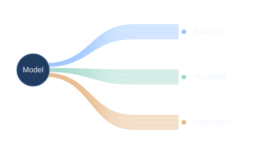

Symmetric design and implementation
We design lightweight primitives and study how their structure translates into efficient, constant-time software.
NTU Singapore
The Symmetric Cryptography and Machine Learning Lab studies how to design and analyze ciphers, understand the security of neural networks, and build interpretable models.
With OCP, researchers can describe a symmetric primitive once, visualize its structure, and reuse the model for automated analysis and implementation.

We design lightweight primitives and study how their structure translates into efficient, constant-time software.

We use differential methods, constraint solvers and machine learning to analyze symmetric primitives.

We study neural-network weight recovery, adversarial attacks and the limits of model confidentiality.

We design compact neural architectures around Boolean functions and sparse rules for efficient inference and formal verification.